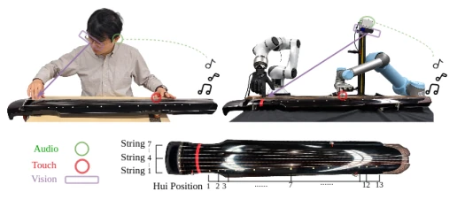
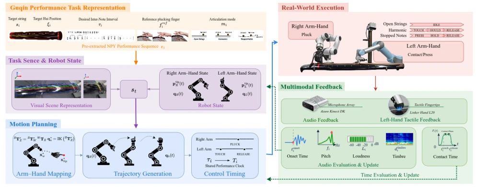
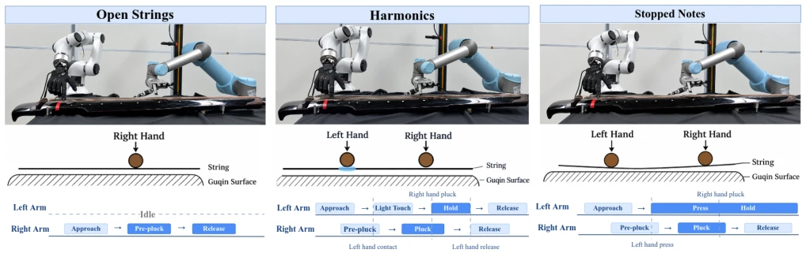
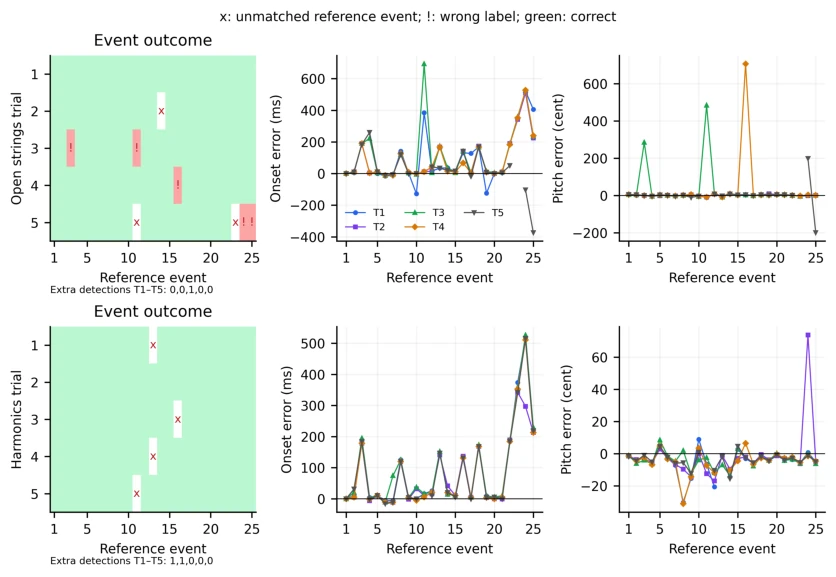
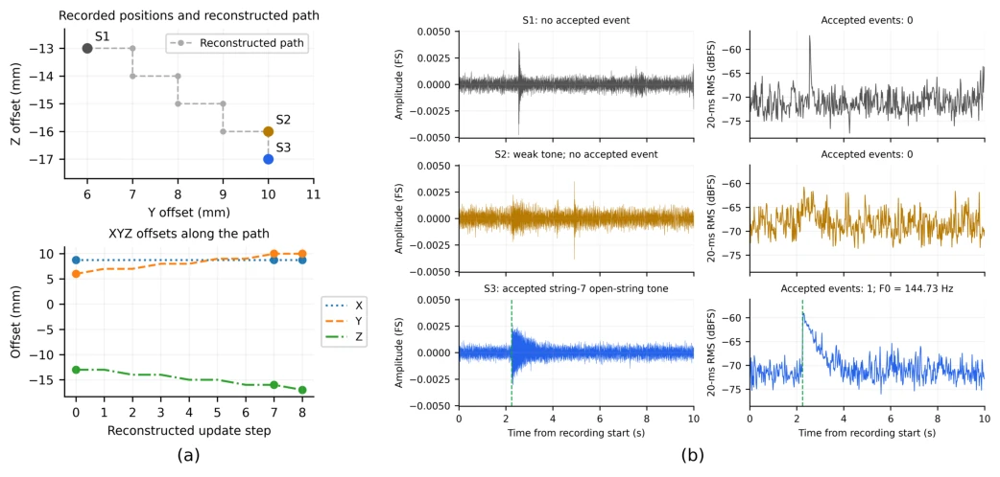
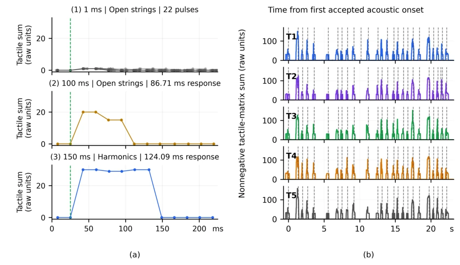
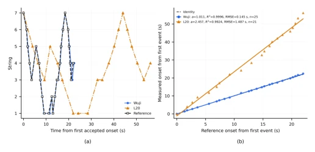
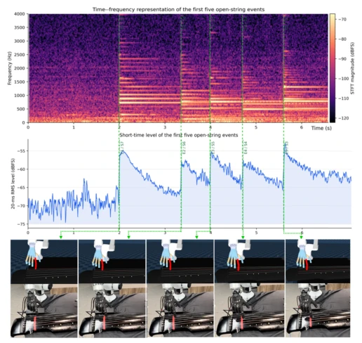

这篇论文把古琴机器人玩成了“精密机械师”，双臂异构系统确实硬核，但本质上还是“算得准不如调得准”。虽然实现了 93% 以上的准确率，但依赖大量离线校准和特定硬件（Elfin+UR5），泛化性存疑。对于 Embodied AI 来说，这更像是一个高难度的自动化控制案例，而非真正的智能交互。不过，在物理乐器演奏这个高难度 benchmark 上，确实填补了从单音到乐句的空白，尤其是左手泛音接触的时序控制，值得点赞。系统对触觉和音频反馈的闭环利用是亮点，但面对复杂乐谱的实时适应性仍显不足，毕竟“机器人弹琴”终究还没到“即兴创作”的境界。
This paper positions the guqin robot as a "precision mechanic". The dual-arm heterogeneous system is indeed technically impressive, but essentially it remains "accurate calculation is not as good as accurate calibration". Although it achieved over 93% accuracy, it relies on extensive offline calibration and specific hardware (Elfin+UR5), so generalization is questionable. For Embodied AI, this is more like a high-difficulty automated control case rather than true intelligent interaction. However, on this high-difficulty benchmark of physical instrument performance, it indeed fills the gap from single notes to phrases, especially the timing control of left-hand harmonic contact, which is commendable. The system's closed-loop utilization of tactile and audio feedback is a highlight, but real-time adaptability to complex scores still appears insufficient, after all "robot playing guqin" has not yet reached the realm of "improvisation".
Robot music performance has always been a touchstone for Embodied AI [1]. Existing research mostly focuses on guitar, piano, or single-note plucking [4]-[6]. The guqin challenge lies in having no frets, dense string spacing (<20mm), and asymmetric hands (right hand plucks, left hand presses harmonics). Existing methods mostly rely on manual teaching or single-note triggers, lacking a unified framework to compile structured scores into dual-arm actions [7], [8]. This paper aims to solve system-level problems of phrase-level performance, rather than single contact skills. By introducing visual localization, tactile gating, and audio feedback, it attempts to solve the uncertainty of physical contact, filling the gap from single notes to phrases.

Fig. 1: Physical heterogeneous dual-arm robotic system executing phrase-level performance on a real guqin. The setup integrates an Elfin manipulator with a multi-fingered hand for right-hand pluck- ing, a UR5 manipulator with a contact-sensing hand for left-hand harmonic interaction, an RGB-D camera for instrument localization, and an acoustic feedback pipeline.
The overall framework models performance as a hybrid discrete-continuous task. 1) Task representation: Score events mapped to parametric targets (string, hui position, time). 2) Perception: RGB-D camera locates strings and hui positions, tactile monitors left-hand contact, audio feedback calibrates plucking parameters. 3) Planning: Hierarchical dual-arm planning, including working finger assignment (optimizing cost function), IK branch continuity optimization (reducing joint jitter), dual-arm timing synchronization (left-hand contact must precede right-hand plucking). 4) Monitoring: Tactile gating ensures harmonic contact, audio evaluates event results. Specifically, right-hand plucking estimates initial position via vision, then iteratively optimizes offset via audio loss function; left-hand harmonic contact verifies contact state via tactile sensor, ensuring stable contact is established before plucking. The planner also considers joint acceleration and jitter minimization to ensure trajectory smoothness. Additionally, the system introduces a unified performance clock to coordinate dual-arm timing, ensuring the left-hand contact window opens before right-hand plucking.

Fig. 2: Overview of the proposed phrase-level robotic guqin performance framework, integrating event-level score parsing, vision-guided 3D localization, hierarchical bimanual motion planning, and audio-tactile interaction monitoring.

Fig. 3: State machine transitions and bimanual temporal coordination timeline. The top panels depict the phase state machines for right-hand plucking and left-hand harmonic interaction. The bottom timeline illustrates the unified performance schedule, detailing the left-hand contact window relative to the right-hand plucking onset tK i , the tactile contact-gating interval, and the post-pluck acoustic evaluation window.
实验Experiments
实验平台为 Elfin+UR5 双臂，演奏《沧海笑》25 事件乐句。对比空弦与七徽泛音模式。指标包括事件正确率、时序误差、音高误差。结果：空弦 93.6%，泛音 96.8% 正确率。泛音模式时序更稳。硬件迁移实验显示不同机械手（Wuji vs L20）能保持时序比例，但速度差异大。证明了系统鲁棒性。此外，音频校准显著提升了拨弦成功率，触觉反馈有效验证了泛音接触时机。
The experimental platform is Elfin+UR5 dual-arm, performing "Canghai Xiao" 25-event phrase. Comparing open string and 7th hui harmonic modes. Metrics include event accuracy, timing error, pitch error. Results: Open string 93.6%, harmonic 96.8% accuracy. Harmonic mode timing is more stable. Hardware transfer experiments show different manipulators (Wuji vs L20) can maintain timing ratios, but speed differences are large. This proves system robustness. Additionally, audio calibration significantly improved plucking success rate, tactile feedback effectively verified harmonic contact timing.

Fig. 5: Event-level outcomes, normalized onset errors, and pitch errors across five trials in open-string (top) and seventh-hui harmonic (H7, bottom) modes. Crosses indicate plucks whose sound level did not reach the detection threshold(M), exclamation marks indicate improper plucking motions that produced sounds inconsistent with the reference tones(W), and extra detections indicate that two strings were plucked simultaneously (E).

Fig. 6: (a) Right-hand positional calibration offsets for String 7. (b) Waveforms and 20-ms RMS energy across calibration states, showing successful excitation at state S3.

Fig. 7: (a) Tactile sensor responses under commanded hold times of 1, 100, and 150 ms. (b) Continuous tactile intensity traces across all five harmonics trials, with dashed lines marking verified acoustic onsets.

Fig. 8: (a) Accepted event sequences. Discrete string event repro- duction comparison between the Wuji Hand (22.4 s) and replacement L20 Hand (56.2 s) against the score reference. (b) Temporal transfer.
其他图片Other Figures

Fig. 4: Event-level acoustic monitoring of five consecutive open- string plucks. Top: STFT spectrogram and short-time RMS level time-aligned with commanded event onsets (dashed lines). Bottom: Synchronized snapshot sequences from simulation and physical robot execution.